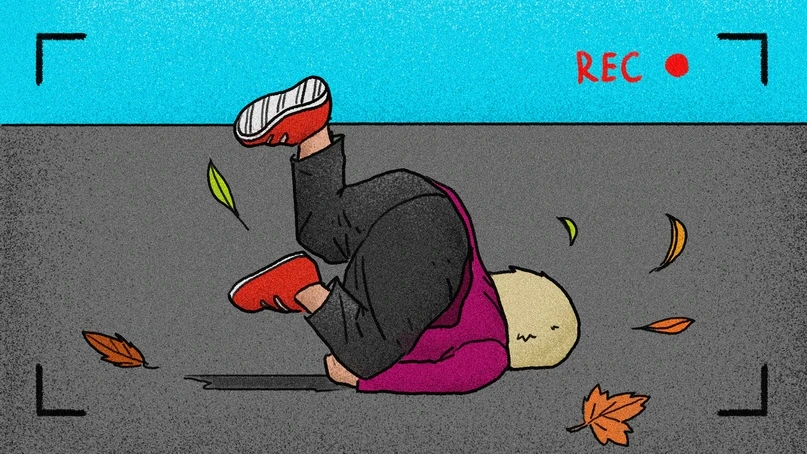

Mr. Nobody вспоминает своего отца — человека, с которым он пересекался очень редко, но чьей «тропой» умудрился уйти
В этом году умер мой отец. Воспоминания о нем, как бы я ни старался их скомпоновать, так и остались разрозненными. Впрочем, мое отношение к нему тоже осталось малопонятным и смутным.
В моей жизни отец играл такую же роль, как Стэн Ли во всех фильмах «Марвел», — просто появлялся в одном из эпизодов, в какой-то полушутливой форме, а затем снова пропадал — так же бессмысленно, как и возникал.
Подобных эпизодов было несколько: на видеокассетах, которые некоторое время стояли на полках в моей комнате, в реальной, «свободной» жизни, и когда я сидел в тюрьме.
На первую видеокассету был записан мой четвертый день рождения. За большим столом сидят улыбающиеся родственники, среди которых и отец, рядом с мамой. Добрую половину хронометража занимает съемка довольно странного происшествия — я, почему-то голый, катаюсь на игрушечной машинке по просторной квартире, куда то и дело заходят гости, разуваясь и суетливо подбирая тапочки в коридоре. А дедушка, снимающий меня на камеру, смеющимся закадровым голосом уговаривает меня одеться.

На другой кассете было довольно короткое видео: мой первый школьный день. Мама снимает, а я иду рядом с отцом по улице. До школы около 10 минут пешком. На мне — бордовый костюм (в конце 90-х было два модных цвета: темно-зеленый и бордовый) с бабочкой, в руках — букет цветов, на спине — портфель. Мама задает мне вопросы, цель которых — объяснить происходящее:
— Куда мы идем? — с притворным интересом спрашивает мама.
— В школу, — отвечаю я, поднимая голову, чтобы видеть ее лицо.
Кульминация ролика такая: мне задают очередной вопрос, и я, едва начав на него отвечать, путаюсь в своих ногах. Падение выглядит карикатурно-нелепым, как в шоу Бенни Хилла. Я втыкаюсь мордой в асфальт, рассекаю себе бровь и нос. Отец поднимает меня, заливающегося кровью и слезами, на ноги. На этом видео обрывается.
Единственный запомнившийся мне раз, когда я вживую видел отца, — когда я, десятилетний, был в гостях у бабушки. Папа сидел возле телевизора, что-то рассказывал мне и ковырял ссадины на костяшках своего кулака. Кажется, он объяснял причины развода с мамой, но я не слушал, полностью поглощенный его операциями с руками: вот он сдирает очередной слой запекшейся крови, вот идет уже свежая. Привычка ковырять болячки передалась мне, и избавиться от нее я не могу до сих пор.
Все остальное наше общение не было обременено его личным присутствием. После развода отец, кажется, когда-то хотел навестить меня, но моя мама была против, да и я желанием не горел. Чуть позже он попал в тюрьму за что-то глупое и смешное — глупое и смешное, потому что я никак не мог взять в толк, каким образом взрослый мужчина опускается до мелкого воровства и разбоя.
Порой очень редко мне приходили письма от него — с зоны. Что-то о том, как важно следить за здоровьем, как важно делать утреннюю зарядку каждый день. И о стихах — мол, надо читать поэзию и любить ее. Впрочем, его знания в этой области ограничивались Пушкиным и Лермонтовым — поэтами, еще со школы пустившими корни в его сознании и только потому запомнившимися. На его письма я не отвечал, даже не задумываясь, что ответа вообще кто-то ждет. Еще реже папа звонил, кратко пересказывая содержание своих писем (что было ненамеренно — он просто не мог говорить ни о чем другом). Мой отец освобождался и садился так часто, что в конце концов два принципиально разных действия потеряли для него свое исходное значение.
Он вновь появился, когда я уже сам сидел в тюрьме, вернее, на зоне. Не знаю, как он меня нашел. В барак пришел какой-то мужик и спросил меня.
— Привет, — говорю, — а что такое?
— Здарова, тебя отец ищет, он сейчас в Липецке сидит. Вот его номер, — мужик протянул мне листок с цифрами.
Следующей ночью я решился позвонить папе — не потому, что испытывал какие-то особенные чувства. Но раз уж, чтобы найти меня, привлекли посторонних людей, проигнорировать старания было бы невежливо. Тем более что отец вряд ли угадал с первого раза колонию, где я нахожусь.
Разговор не складывался, пока мы не переключились на зоновские темы. О том, что у нас «рулят» спортсмены, я старался не распространяться: общение с другими лагерями могло выйти мне боком.
Говорили о баланде, о том, как проходят проверки и шмоны, — впервые за столько лет у нас нашлось что-то общее, и от этой мысли мне стало противно. Вспомнилась типичная наколка на пальцах «У.Т.Р.О.» — ушел тропой родного отца.

Через год отец освободился, и на воле его жизнь стала гораздо сложнее. Свобода в очередной раз перестала быть эфемерным словом из зоновского фольклора, обнажив свои проблемы и трудности. Нужно было ухаживать за бабушкой, его матерью, которая после смерти дедушки и в силу преклонного возраста едва справлялась с элементарными действиями. Счета были не оплачены, холодильник до отказа набит испортившимися продуктами, а обычный фильтр для воды куплен за пять тысяч рублей у каких-то мошенников. Отцу пришлось расхлебывать все это. На работу его не брали.
У бабушки был маразм, она стала забывчивой, рассеянной, мысли у нее путались. Например, когда я разговаривал по телефону с отцом (что характерно — у него имелся только домашний), бабушка каждые три минуты заходила в комнату и спрашивала, будет ли отец ужинать — несмотря на то что они ели вместе за 10 минут до этого.
Однажды я попросил позвать бабушку к телефону:
— Здравствуй, — сказал я громко, чтобы она расслышала. — Это твой внук.
— О, привет, родной! Как ты? — спросила бабушка подозрительно сочувствующим тоном, который натолкнул меня на следующий вопрос.
— Да нормально, а что такое-то?
— Как что? Как может быть нормально, если тебе ноги оторвало? — чуть ли не плакала изумленная бабушка.
Само утверждение не слишком меня удивило — мало ли, что может надумать себе слабая 85-летняя женщина, не так давно потерявшая мужа, с которым прожила 65 лет. Но словосочетание «оторвало ноги» придавало ее помутнению что-то военное и киношное.
— Нет, бабушка, я просто в тюрьме, — проговорил я.
— А-а-а, в тюрьме! — воскликнула она с облегчением, — И много осталось?
— Пару лет, — соврал я, не понимая, почему она даже не спросила, за что я сижу.
— Может, тебе посылку выслать? У меня много консервов: рыба, тушенка…
— Нет, нет, не надо. У меня все есть, здесь хорошо кормят, — заверил я. — Не беспокойся.

Через несколько месяцев мне позвонил отец: сказал, чтобы я прислал ему список того, что нужно положить в посылку. Это было неожиданностью — зная, что у него нет ни работы, ни денег, я осторожно осведомился, какой у него бюджет.
— Ты напиши, а там посмотрим, — туманно ответил отец.
Я написал и отправил список СМС-сообщением (к тому времени у него появился мобильный телефон). Следующий звонок раздался через неделю:
— Слушай, ты можешь сейчас сказать, какие книги тебе нужны? — спросил отец, пока на заднем плане слышались звук открывающейся двери и звон колокольчика.
— Я же сообщением отправил, пап.
— Бля, я не тупой, сейчас мне продиктуй и все! — торопливым шепотом ответил отец.
— Ладно, как скажешь. «Левиафан» Гоббса, «Синхрония» Юнга… — начал перечислять я.
— А это в каком отделе? — спросил он.
— Не знаю, спроси на кассе.
— Не буду… А, вот, нашел!
После того как все нужные книги нашлись, отец буркнул:
— Ладно, давай, я потом наберу, — и снова послышался слабый звон колокольчика.
Спустя минуту, после того как отец положил трубку, я понял, что он даже на кассе не был и книги не покупал, а просто вынес из магазина. Позднее я узнал, что почти всю передачу он наворовал схожим способом.
Новость о его гибели принес мой начальник отряда, корча скорбное лицо:
— Твой отец скончался, — сказал Сергеевич.
— Как? — спрашиваю.
— В ДТП. Больше ничего не знаю.
Должен ли был я что-то почувствовать? Наверное, да. Но не почувствовал. Когда я задумываюсь о жизни и смерти отца, мне кажется, что такой ранний уход был лучшим исходом — будто он вытянул выигрышный лотерейный билет. В голосе отца всегда сквозила смертельная усталость, и он бы умер от нее, если бы это было возможно.
О чем отец мечтал, какими вопросами задавался — я не знал о нем ровным счетом ничего, кроме нелепой и неудачной биографии. Он пролетел по жизни несуразным форсажем, оставив после себя только парочку когда-то взятых микрокредитов и, собственно, меня.